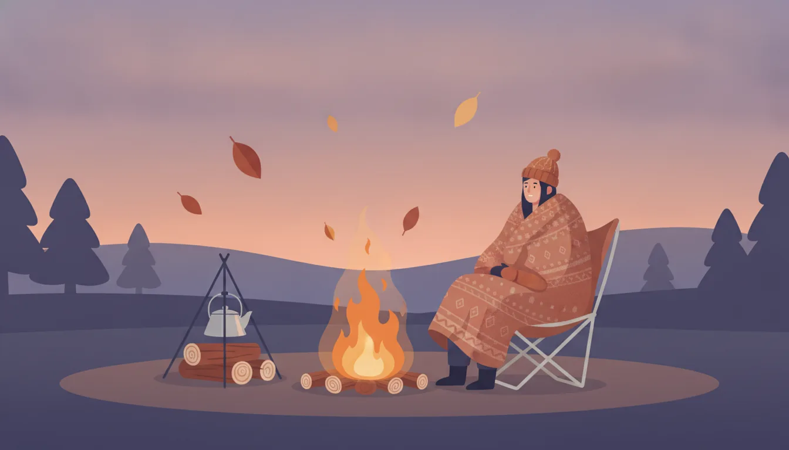

秋冬の焚き火を快適に。防寒ギアの選び方比較
公開日: 2026-08-14
本ページのリンクには一部アフィリエイトリンクが含まれます(#PR)。
秋も深まり、焚き火が恋しい季節になってきた。パチパチと薪の弾ける音を聞きながら過ごす時間は、それだけでも十分に贅沢だが、寒さ対策を怠ると楽しさが半減してしまう。焚き火の熱は思った以上に局所的で、正面は暖かくても背中側はしっかり冷える、というのはキャンプ経験者ならよく知る話だろう。今回は、焚き火シーンで選びたい防寒ギアについて、アイテム別に比較の視点をまとめてみたい。
🔥 焚き火に適したウェア選びの基本
焚き火の前で過ごすウェアは、防寒性だけでなく「火の粉に強いかどうか」も重要な判断材料になる。化繊のダウンジャケットは軽くて暖かい反面、火の粉が飛んで穴が開くリスクがある。一方、コットンやウール素材は難燃性が高く、焚き火向きとされることが多い。最近は表地に難燃コットンを使い、中綿は化繊という組み合わせのアウターも増えてきた。用途に応じて素材を確認しておくと安心だ。
重ね着の考え方としては、ベースレイヤーで汗を逃がし、ミドルレイヤーで空気の層をつくり、アウターで風と火の粉から守るという3段構えが基本になる。特に焚き火では体の前後で温度差が出やすいので、脱ぎ着しやすい構成にしておくと調整がききやすい。
🪑 チェア・座面まわりの保温性を比較する
地面や座面からの底冷えは、思った以上に体温を奪う。焚き火用チェアを選ぶ際は、座面の高さと素材をチェックしたい。座面が低いローチェアは焚き火との距離を近く保ちやすいが、地面からの冷気を受けやすいという面もある。逆にハイチェアは冷気の影響を受けにくいものの、焚き火の熱がやや遠く感じられることもある。
座面素材はメッシュ系だと通気性は良いが真冬は冷えを感じやすく、キャンバス地や難燃加工された布地の方が焚き火シーンには向いている場合が多い。ひざ掛けやクッションを併用するのも、手軽な底冷え対策としてよく使われる方法だ。
🧦 足元の防寒アイテムで差がつく理由
焚き火中は座りっぱなしになることが多く、足先の血行が滞りやすい。この状態が続くと、他の部分をどれだけ着込んでいても足先だけ冷えてしまうことがある。厚手のウールソックスに加えて、防寒ブーツやムートン素材のスリッパを併用する人も多い。
選ぶ際のポイントは、焚き火のそばで使うことを前提に、多少の熱や火の粉にも耐えられる素材かどうかを確認すること。合成皮革は熱で変形しやすいものもあるので、天然皮革やウール素材のアイテムのほうが焚き火シーンには扱いやすい傾向がある。
🧤 手先・首元の小物で保温効率を上げる工夫
体感温度を左右するポイントとして、首元と手先は意外と見落とされがちだ。ネックウォーマーやマフラーは首まわりの隙間を埋めることで、着込んだ服全体の保温効率を高めてくれる。手先については、焚き火の作業(薪をくべる、道具を扱うなど)があるため、厚すぎるグローブよりも指先の動かしやすいタイプが実用的だ。
- ネックウォーマー:着脱がしやすく、暑くなったら緩めやすい
- 薄手の手袋+焚き火用の耐熱グローブの併用
- ニット帽:頭部からの熱の逃げを防ぐ
❄️ 季節別・気温別の防寒ギア調整の考え方
同じ「秋冬の焚き火」でも、11月頃と1〜2月の厳冬期では必要な装備の量がかなり変わってくる。目安として、気温が一桁になってくる時期からは、ダウン系のインナーやブランケットの追加を検討したい。逆に気温が高めの初秋は、通気性の良いミドルレイヤーだけで十分なこともある。
現地の気温だけでなく、風の有無や標高もチェックしておくと、装備の過不足を防ぎやすい。標高が上がると体感温度は下がりやすいので、平地の予報より一段階厚着を意識しておくと調整しやすいだろう。
🧳 防寒ギアの手入れと保管で失うワンシーズン
防寒ギアは、しまい方一つで翌シーズンの使い心地が変わってくる。焚き火の煙や火の粉の跡がついたまま収納すると、においや焦げ穴が広がっていることに気づかず、いざ使うときにがっかりする、というのはよくある話だ。ウール素材は湿気を吸いやすいので、しっかり乾燥させてから防虫剤とともにしまうのが基本になる。
ダウン系のインナーは圧縮しすぎるとロフト(かさ高)が損なわれ、保温力が落ちてしまうことがある。収納袋はできるだけゆとりのあるものを選び、シーズンオフも軽く形を整えておくと、次のシーズンも本来の暖かさを発揮しやすい。
🎒 初心者向け・荷物を増やしすぎない防寒ギアの組み方
防寒対策をあれこれ揃えようとすると、荷物が一気に増えてしまいがちだ。初心者のうちは、まず「アウター」「座面の保温」「足元」の3点を優先して押さえ、その後で小物を少しずつ足していく組み方がわかりやすい。すべてを一度に完璧に揃える必要はなく、実際に焚き火をしてみて「どこが寒かったか」を基準に買い足していくのも一つのやり方だ。
❓ よくある質問
Q. 化繊のダウンジャケットは焚き火に絶対使えませんか?
使えないわけではないが、火の粉による穴あきのリスクはコットンやウール素材より高めとされている。焚き火から距離を取る、火の粉よけを使うなどの工夫と合わせて検討するとよい。
Q. 焚き火用のブランケットは何を選べばいいですか?
難燃性表示のあるウール素材や、耐火加工が施された製品が焚き火シーンでは扱いやすい。サイズは膝掛け程度から、全身を包める大判タイプまであるので、座る時間の長さに応じて選ぶとよいだろう。
Q. 防寒ギアはどこから揃え始めるのがおすすめですか?
まずは底冷え対策(座面・足元)から着手する人が多い。体感の冷えを感じやすい部分から順に整えていくと、無駄な出費を抑えやすい。
この記事でおすすめしたいアイテム
 PR
PR
 PR
PR
 PR
PR
本ページのリンクには一部アフィリエイトリンクが含まれます(#PR)。